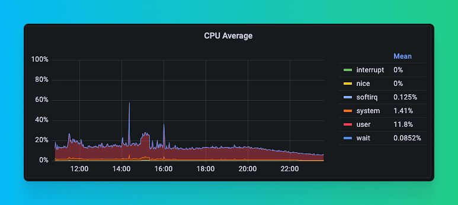
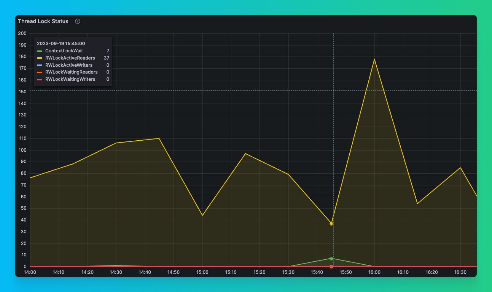
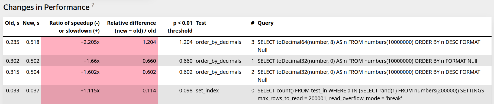

Maksim, database management systems developer.
1. Concurrency.
2. Low-level optimizations.
3. Algorithms.
CPU underutilization in one of our biggest clusters.
After 1 year during similar indicent we spot that ContextLockWait async profile event periodically increased ...
During indident we periodically dumped all stack traces to understand if all threads are blocked on lock inside Context using system.stack_trace.
WITH arrayMap(x -> demangle(addressToSymbol(x)), trace) AS all
SELECT thread_name, thread_id, query_id, arrayStringConcat(all, '\n') AS res
FROM system.stack_trace LIMIT 1 FORMAT Vertical;
Row 1:
──────
thread_name: clickhouse-serv
thread_id: 125441
query_id:
res: pthread_cond_wait
std::__1::condition_variable::wait(std::__1::unique_lock&)
BaseDaemon::waitForTerminationRequest()
DB::Server::main(/*arguments*/)
Poco::Util::Application::run()
DB::Server::run()
Poco::Util::ServerApplication::run(int, char**)
mainEntryClickHouseServer(int, char**)
main
__libc_start_main
_start
Per query profile events:
...
M(GlobalThreadPoolJobs,
"Counts the number of jobs that have been pushed to the global thread pool.",
ValueType::Number) \
M(GlobalThreadPoolLockWaitMicroseconds,
"Total time threads have spent waiting for locks in the global thread pool.",
ValueType::Microseconds) \
M(GlobalThreadPoolJobWaitTimeMicroseconds,
"Measures the elapsed time from when a job is scheduled in the thread pool to when it is picked up
for execution by a worker thread. This metric helps identify delays in job processing, indicating
the responsiveness of the thread pool to new tasks.",
ValueType::Microseconds) \
M(LocalThreadPoolLockWaitMicroseconds,
"Total time threads have spent waiting for locks in the local thread pools.",
ValueType::Microseconds) \
...
We added ContextLockWaitMicroseconds event to ProfileEvents.
...
M(ContextLock,
"Number of times the lock of Context was acquired or tried to acquire. This is global lock.",
ValueType::Number) \
M(ContextLockWaitMicroseconds,
"Context lock wait time in microseconds",
ValueType::Microseconds) \
...
Example query:
SELECT UserID, count(*) FROM (SELECT * FROM hits_clickbench LIMIT 10) GROUP BY UserID
0 rows in set. Elapsed: 0.005 sec.
Run benchmark:
clickhouse-benchmark --query="SELECT UserID, count(*) FROM (SELECT * FROM hits_clickbench LIMIT 10)
GROUP BY UserID" --concurrency=200
Check results:
SELECT quantileExact(0.5)(lock_wait_milliseconds), max(lock_wait_milliseconds) FROM
(
SELECT (ProfileEvents['ContextLockWaitMicroseconds'] / 1000.0) AS lock_wait_milliseconds
FROM system.query_log WHERE lock_wait_milliseconds > 0
)
┌─quantileExact(0.5)(lock_wait_milliseconds)─┬─max(lock_wait_milliseconds)──┐
│ 17.452 │ 382.326 │
└────────────────────────────────────────────┴──────────────────────────────┘
ContextSharedPart is responsible for storing and providing access to global shared objects that are shared between all sessions and queries, for example: Thread pools, Server paths, Global trackers, Clusters information.
Context is responsible for storing and providing access to query or session-specific objects, for example: query settings, query caches, query current database.
During query execution, ClickHouse can create a lot of Contexts because each subquery in ClickHouse can have unique settings. For example:
SELECT id, value
FROM (
SELECT id, value
FROM test_table
SETTINGS max_threads = 16
)
WHERE id > 10
SETTINGS max_threads = 32
A large number of low-latency, concurrent queries with many subqueries will create a lot of Contexts per query, and the problem becomes even bigger.
The problem was that a single mutex was used for most of the synchronization between Context and ContextSharedPart, even when we worked with objects local to Context.
We did a big refactoring, replacing a single global mutex with two read-write mutexes. One global read-write mutex for ContextSharedPart and one local read-write mutex for each Context.
We used read-write mutexes because most of the time we do a lot of concurrent reads (for example read settings or some path) and rarely concurrent writes.
In many places, we completely got rid of synchronization where it was used for initialization and used call_once for objects that are initialized only once.
ContextSharedPart and Context both contain a lot of fields and it is very hard to properly split synchronization between them manually.
We added clang Thread Safety Analysis annotations to all fields https://clang.llvm.org/docs/ThreadSafetyAnalysis.html
clang -c -Wthread-safety example.cpp
class BankAccount {
private:
Mutex mu;
int balance GUARDED_BY(mu);
void depositImpl(int amount) /* TO FIX: REQUIRES(mu) */ {
balance += amount; // WARNING! Cannot write balance without locking mu.
}
void withdrawImpl(int amount) REQUIRES(mu) {
balance -= amount; // OK. Caller must have locked mu.
}
public:
void withdraw(int amount) {
mu.Lock();
withdrawImpl(amount); // OK. We've locked mu.
/* TO FIX: mu.unlock() or use std::lock_guard */
} // WARNING! Failed to unlock mu.
void transferFrom(BankAccount& b, int amount) {
mu.Lock();
/* TO FIX: lock() and unlock() b.mu */
b.withdrawImpl(amount); // WARNING! Calling withdrawImpl() requires locking b.mu.
depositImpl(amount); // OK. depositImpl() has no requirements.
mu.Unlock();
}
};
Thread safety analysis provides a way of protecting resources with capabilities.
A resource is either a data member, or a function/method that provides access to some underlying resource.
The analysis ensures that the calling thread cannot access the resource (i.e. call the function, or read/write the data) unless it has the capability to do so.
A thread may hold a capability either exclusively or shared. An exclusive capability can be held by only one thread at a time, while a shared capability can be held by many threads at the same time.
This mechanism enforces a multiple-reader, single-writer pattern. Write operations to protected data require exclusive access, while read operations require only shared access.
Capabilities are associated with named C++ objects which declare specific methods to acquire and release the capability. The name of the object serves to identify the capability.
The most common example is a mutex. For example, if mu is a mutex, then calling mu.Lock() causes the calling thread to acquire the capability to access data that is protected by mu. Similarly, calling mu.Unlock() releases that capability.
Mutex mu1, mu2;
int a GUARDED_BY(mu1);
int b GUARDED_BY(mu2);
void foo() REQUIRES(mu1, mu2) {
a = 0;
b = 0;
}
For implementation of capability classes and functions: CAPABILITY(...), SCOPED_CAPABILITY, ACQUIRE(…), ACQUIRE_SHARED(…), RELEASE(…), RELEASE_SHARED(…), RELEASE_GENERIC(…)
For protecting data: GUARDED_BY(...), PT_GUARDED_BY(...), REQUIRES(…), REQUIRES_SHARED(…)
Utility: NO_THREAD_SAFETY_ANALYSIS
In LLVM standard library all mutex implementations are annotated with TSA annotations. Example std::mutex:
class _LIBCPP_TYPE_VIS _LIBCPP_THREAD_SAFETY_ANNOTATION(capability("mutex")) mutex
{
__libcpp_mutex_t __m_ = _LIBCPP_MUTEX_INITIALIZER;
public:
_LIBCPP_INLINE_VISIBILITY
_LIBCPP_CONSTEXPR mutex() = default;
mutex(const mutex&) = delete;
mutex& operator=(const mutex&) = delete;
#if defined(_LIBCPP_HAS_TRIVIAL_MUTEX_DESTRUCTION)
~mutex() = default;
#else
~mutex() _NOEXCEPT;
#endif
void lock() _LIBCPP_THREAD_SAFETY_ANNOTATION(acquire_capability());
bool try_lock() _NOEXCEPT _LIBCPP_THREAD_SAFETY_ANNOTATION(try_acquire_capability(true));
void unlock() _NOEXCEPT _LIBCPP_THREAD_SAFETY_ANNOTATION(release_capability());
typedef __libcpp_mutex_t* native_handle_type;
_LIBCPP_INLINE_VISIBILITY native_handle_type native_handle() {return &__m_;}
};
Default implementation of std::shared_mutex is slow. In ClickHouse we have our own implementation.
In ClickHouse we want to have mutexes with additional logic during lock/unlock. For example update metrics.
In both cases we do not want to have a lot of duplicated TSA annotations in all of our mutexes. We want to hide them and to have generic solution.
We designed our own SharedMutexHelper template class using CRTP pattern that implements SharedMutex requirementes https://en.cppreference.com/w/cpp/named_req/SharedMutex and adds TSA annotations.
template <typename Derived, typename MutexType = SharedMutex>
class TSA_CAPABILITY("SharedMutexHelper") SharedMutexHelper
{
auto & getDerived() { return static_cast<Derived &>(*this); }
public:
// Exclusive ownership
void lock() TSA_ACQUIRE() { getDerived().lockImpl(); }
bool try_lock() TSA_TRY_ACQUIRE(true) { getDerived().tryLockImpl(); }
void unlock() TSA_RELEASE() { getDerived().unlockImpl(); }
// Shared ownership
void lock_shared() TSA_ACQUIRE_SHARED() { getDerived().lockSharedImpl(); }
bool try_lock_shared() TSA_TRY_ACQUIRE_SHARED(true) { getDerived().tryLockSharedImpl(); }
void unlock_shared() TSA_RELEASE_SHARED() { getDerived().unlockSharedImpl(); }
protected:
/// Default implementations for all *Impl methods.
void lockImpl() TSA_NO_THREAD_SAFETY_ANALYSIS { mutex.lock(); }
...
void unlockSharedImpl() TSA_NO_THREAD_SAFETY_ANALYSIS { mutex.unlock_shared(); }
MutexType mutex;
};
class ContextSharedMutex : public SharedMutexHelper<ContextSharedMutex>
{
private:
using Base = SharedMutexHelper<ContextSharedMutex, SharedMutex>;
friend class SharedMutexHelper<ContextSharedMutex, SharedMutex>;
void lockImpl()
{
ProfileEvents::increment(ProfileEvents::ContextLock);
CurrentMetrics::Increment increment{CurrentMetrics::ContextLockWait};
Stopwatch watch;
Base::lockImpl();
ProfileEvents::increment(ProfileEvents::ContextLockWaitMicroseconds,
watch.elapsedMicroseconds());
}
void lockSharedImpl()
{
ProfileEvents::increment(ProfileEvents::ContextLock);
CurrentMetrics::Increment increment{CurrentMetrics::ContextLockWait};
Stopwatch watch;
Base::lockSharedImpl();
ProfileEvents::increment(ProfileEvents::ContextLockWaitMicroseconds,
watch.elapsedMicroseconds());
}
};
In LLVM standard library std::shared_lock did not use TSA annotations.
We implemented our own SharedLockGuard:
template <typename Mutex>
class TSA_SCOPED_LOCKABLE SharedLockGuard
{
public:
explicit SharedLockGuard(Mutex & mutex_) TSA_ACQUIRE_SHARED(mutex_)
: mutex(mutex_) { mutex_.lock_shared(); }
~SharedLockGuard() TSA_RELEASE() { mutex.unlock_shared(); }
private:
Mutex & mutex;
};
struct ContextSharedPart : boost::noncopyable
{
/// For access of most of shared objects.
mutable ContextSharedMutex mutex;
/// Path to the data directory, with a slash at the end.
String path TSA_GUARDED_BY(mutex);
/// Path to the directory with some control flags for server maintenance.
String flags_path TSA_GUARDED_BY(mutex);
/// Path to the directory with user provided files, usable by 'file' table function.
String dictionaries_lib_path TSA_GUARDED_BY(mutex);
/// Path to the directory with user provided scripts.
String user_scripts_path TSA_GUARDED_BY(mutex);
/// Path to the directory with filesystem caches.
String filesystem_caches_path TSA_GUARDED_BY(mutex);
/// Path to the directory with user provided filesystem caches.
String filesystem_cache_user_path TSA_GUARDED_BY(mutex);
/// Global configuration settings.
ConfigurationPtr config TSA_GUARDED_BY(mutex);
};
String Context::getPath() const
{
SharedLockGuard lock(shared->mutex);
return shared->path;
}
String Context::getFlagsPath() const
{
SharedLockGuard lock(shared->mutex);
return shared->flags_path;
}
String Context::getUserFilesPath() const
{
SharedLockGuard lock(shared->mutex);
return shared->user_files_path;
}
String Context::getDictionariesLibPath() const
{
SharedLockGuard lock(shared->mutex);
return shared->dictionaries_lib_path;
}
Benchmark:
clickhouse benchmark -r --ignore-error \
--concurrency=500 \
--timelimit 600 \
--connect_timeout=20 < queries.txt
Results:
Before ~200 QPS. After ~600 QPS (~3x better).
Before CPU utilization of only ~20%. After ~60% (~3x better).
Before median query time 1s. After ~0.6s (~2x better).
Before slowest queries took ~75s. After ~6s (~12x better).
We also were able to fully utilize ClickHouse instance with --concurrency=1000.
Results:
~1,000 QPS
~95-96% CPU utilization
In December 2023, during the development of some ClickHouse features, when I ran some queries that read a lot of String columns,
I noticed in the perf-top and flame graphs that we can spend around 20-40% of query execution time on strings deserialization.
I knew that string deserialization place was already heavily optimized in ClickHouse, but I decided to dig deeper.
In perf-top, I saw something like this:
Samples: 1M of event 'cycles', 4000 Hz, Event count (approx.): 756969039682 lost: 0/0 drop: 0/17041
Overhead Shared Object Symbol
39.00% clickhouse [.] DB::deserializeBinarySSE2<1>
15.12% clickhouse [.] DB::PODArrayBase<1ul, 4096ul>::resize<>
13.57% clickhouse [.] DB::PODArrayDetails::byte_size
9.36% clickhouse [.] LZ4::(anonymous namespace)::decompressImpl<16ul, true>
4.36% [kernel] [k] copy_user_generic_string
2.60% clickhouse [.] DB::FunctionStringOrArrayToT::executeImpl
2.55% clickhouse [.] CityHash_v1_0_2::CityHash128WithSeed
2.31% clickhouse [.] LZ4::(anonymous namespace)::decompressImpl<16ul, false>
1.40% clickhouse [.] memcpy
1.15% clickhouse [.] DB::findExtremeImplAVX2
0.52% [kernel] [k] filemap_get_read_batch
0.52% clickhouse [.] LZ4::(anonymous namespace)::decompressImpl<8ul, true>
0.40% clickhouse [.] LZ4::(anonymous namespace)::decompressImpl<32ul, false>
Most of the time is spent in DB::deserializeBinarySSE2, and it is expected. What is not expected that we see PODArray::resize and PODArray::byte_size methods. If you check the DB::deserializeBinarySSE2 assembly, you can notice that the PODArray::resize function is called from it, and that function call is not inlined.
...
0.32 │ │ inc %r13
1.25 │ │ mov %r13,(%rax)
5.19 │ │ add $0x8,%rax
0.02 │ │ mov %rax,0x8(%rbp)
0.23 │ │ mov 0x30(%rsp),%r12
0.36 │ │ mov %r12,%rdi
0.14 │ │ mov %r13,%rsi
2.67 │ │→ callq DB::PODArrayBase<1ul, 4096ul, Allocator<false, false>, 63ul, 64ul>::resize<>
2.95 │ │ mov 0x28(%rsp),%rdx
1.70 │ │ test %rdx,%rdx
1.51 │ │↑ je 51
0.00 │ │ lea 0x11(%r15),%rax
...
If we check the PODArray::resize assembly, we will notice it calls PODArray::byte_size function and we can also see that PODArray::resize function call overhead is high.
...
0.10 │104: mov $0x1,%esi
0.71 │ mov %r14,%rdi
5.92 │ → callq DB::PODArrayDetails::byte_size
5.63 │ add %r12,%rax
0.10 │ mov %rax,0x8(%rbx)
30.30 │ pop %rbx
0.76 │ pop %r12
1.96 │ pop %r13
4.42 │ pop %r14
2.89 │ pop %r15
11.24 │ ← retq
...
In C++ code deserializeBinarySSE2 function looked like this:
void deserializeBinarySSE2(ColumnString::Chars & data, ColumnString::Offsets & offsets, ReadBuffer & istr, size_t limit)
{
size_t offset = data.size();
for (size_t i = 0; i < limit; ++i)
{
if (istr.eof())
break;
UInt64 size;
readVarUInt(size, istr);
...
data.resize(offset);
if (size)
{
#ifdef __SSE2__
/// An optimistic branch in which more efficient copying is possible.
if (offset + 16 * UNROLL_TIMES <= data.capacity() &&
istr.position() + size + 16 * UNROLL_TIMES <= istr.buffer().end())
{
...
}
else
#endif
{
istr.readStrict(reinterpret_cast<char*>(&data[offset - size - 1]), size);
}
}
data[offset - 1] = 0;
}
}
In this specific function, we work with PODArray as just a characters buffer, and we can manually control the resize process and resize buffer with some constant resize factor, for example, 2.
We also use the resize_exact function to reduce memory allocation size. So inside the deserialization loop, we replace:
data.resize(offset);
with:
if (unlikely(offset > data.size()))
data.resize_exact(roundUpToPowerOfTwoOrZero(std::max(offset, data.size() * 2)));
As a result, we have such performance improvement for a query that I used for the optimization test. Around 20% improvement.
Before:
SELECT max(length(value)) FROM test_table FORMAT Null
0 rows in set. Elapsed: 0.855 sec. Processed 1.50 billion rows, 19.89 GB
(1.75 billion rows/s., 23.27 GB/s.)
Peak memory usage: 1.24 MiB.
After:
SELECT max(length(value)) FROM test_table FORMAT Null
0 rows in set. Elapsed: 0.691 sec. Processed 1.50 billion rows, 19.89 GB
(2.17 billion rows/s., 28.79 GB/s.)
Peak memory usage: 1.17 MiB.
Results of performance tests from ClickHouse CI:
| Query | Old (s) | New (s) | Ratio of speedup(-) or slowdown(+) | Relative difference (new - old) / old |
|---|---|---|---|---|
| SELECT count() FROM empty_strings WHERE NOT ignore(s) | 0.449 | 0.27 | -1.662x | -0.399 |
| select anyHeavy(OpenstatSourceID) from hits_100m_single where OpenstatSourceID != '' group by intHash32(UserID) % 1000000 FORMAT Null | 0.088 | 0.066 | -1.328x | -0.247 |
| select anyHeavy(OpenstatCampaignID) from hits_100m_single where OpenstatCampaignID != '' group by intHash32(UserID) % 1000000 FORMAT Null | 0.088 | 0.066 | -1.32x | -0.243 |
| SELECT count() FROM hits_100m_single WHERE NOT ignore(format('{}Hello{}', MobilePhoneModel, PageCharset)) | 0.321 | 0.28 | -1.147x | -0.129 |
| SELECT str FROM test_full_10 FORMAT Null | 0.074 | 0.058 | -1.282x | -0.22 |
| SELECT count() FROM hits_100m_single WHERE NOT ignore(substring(PageCharset, 1, 2)) | 0.135 | 0.116 | -1.16x | -0.138 |
As a result, this optimization improved performance for queries that spend a lot of execution time on string deserialization by 10-20% on average.
For some queries, even for 60%.
There is no silver bullet, or best algorithm for any task.
Try to choose the fastest possible algorithm/algorithms for your specific task.
Performance must be evaluated on real data.
Most of the algorithms are affected by data distribution.
Each problem can have a lot degrees of freedom. For example Sorting:
Stable / nonstable?
External / in RAM?
With limit/without limit?
Is the data already almost sorted?
What about data distribution? How many unique values?
Can we use vectorized sorting algorithms?
Can we allocate additional memory?
In ClickHouse for integers and decimals by default we use LSD RadixSort.
Complexity: O(N * W) where N - number of keys, W - key length. For integers key length is constant amount of bytes in the integer type, so complexity is linear.
It outperforms other sorting algorithms when amount of data is big enough and data does not have any patterns (sorted/almost-sorted/sorted in reverse order).
Most of the time we sort blocks with 65409 (DEFAULT_BLOCK_SIZE) or 1048449 (DEFAULT_INSERT_BLOCK_SIZE) elements.
But if data has patterns, for example, already sorted we can use other sorting algorithms.
In 2022 when I tried to move decimals sorting to LSD RadixSort, we noticed slow down in some cases when data was already sorted or almost sorted:
From Pattern-defeating Quicksort paper:
"The goal of pattern-defeating quicksort (or pdqsort) is to improve on introsort's heuristics to create a hybrid sorting algorithm with several desirable properties. It maintains quicksort's logarithmic memory usage and fast realworld average case, effectively recognizes and combats worst case behavior (deterministically), and runs in linear time for a few common patterns. It also unavoidably inherits in-place quicksort's instability, so pdqsort can not be used in situations where stability is needed."
// Sorts (a portion of) an array, divides it into partitions, then sorts those
algorithm quicksort(A, lo, hi) is
// Ensure indices are in correct order
if lo >= hi || lo < 0 then
return
// Partition array and get the pivot index
p := partition(A, lo, hi)
// Sort the two partitions
quicksort(A, lo, p - 1) // Left side of pivot
quicksort(A, p + 1, hi) // Right side of pivot
partition function specification - Partition the range: reorder its elements, while determining a point of division, so that all elements with values less than the pivot come before the division, while all elements with values greater than the pivot come after it; elements that are equal to the pivot can go either way.
Sorting the entire array is accomplished by quicksort(A, 0, length(A) - 1).
Basically PDQ Sort is a Quick Sort with a lot of optimizations:
1. Choose pivot as median of 3 or pseudomedian of 9.
2. If range was already partitioned attempts to use partial insertion sort that allows 8 (partial_insertion_sort_limit) amount of element moves before giving up.
3. Detects highly unbalanced partitions. If partition was highly unbalanced, try to shuffle elements. Fallback to heap sort, if there was more than log2(array_size) highly unbalanced partitions.
4. Tail recursion elimination for the right-hand partition.
5. For small ranges uses insertion sort.
We added try_sort function in our fork of pdqsort library and used it in ClickHouse:
https://github.com/ClickHouse/ClickHouse/pull/35961
/** Try to fast sort elements for common sorting patterns:
* 1. If elements are already sorted.
* 2. If elements are already almost sorted.
* 3. If elements are already sorted in reverse order.
*
* Returns true if fast sort was performed or elements were already sorted, false otherwise.
*/
template <typename RandomIt, typename Compare>
bool trySort(RandomIt first, RandomIt last, Compare compare)
{
#ifndef NDEBUG
::shuffle(first, last);
#endif
ComparatorWrapper<Compare> compare_wrapper = compare;
return ::pdqsort_try_sort(first, last, compare_wrapper);
}
In ClickHouse we use this in getPermutation function of ColumnVector. First we try to sort data using pdqsort_try_sort, if it is not possible, fallback to LSD RadixSort.
bool try_sort = false;
if (direction == IColumn::PermutationSortDirection::Ascending &&
stability == IColumn::PermutationSortStability::Unstable)
try_sort = trySort(res.begin(), res.end(), less(*this, nan_direction_hint));
else if (direction == IColumn::PermutationSortDirection::Ascending &&
stability == IColumn::PermutationSortStability::Stable)
try_sort = trySort(res.begin(), res.end(), less_stable(*this, nan_direction_hint));
else if (direction == IColumn::PermutationSortDirection::Descending &&
stability == IColumn::PermutationSortStability::Unstable)
try_sort = trySort(res.begin(), res.end(), greater(*this, nan_direction_hint));
else
try_sort = trySort(res.begin(), res.end(), greater_stable(*this, nan_direction_hint));
if (try_sort)
return;
PaddedPODArray<ValueWithIndex<T>> pairs(data_size);
for (UInt32 i = 0; i < static_cast<UInt32>(data_size); ++i)
pairs[i] = {data[i], i};
RadixSort<RadixSortTraits<T>>::executeLSD(pairs.data(), data_size, reverse, res.data());
Sorting sorted or sorted in reverse order data. Around 1.5x - 2x performance improvement. Before:
SELECT key, value FROM sequential_UInt64 ORDER BY key FORMAT Null
0 rows in set. Elapsed: 1.269 sec. Processed 500.00 million rows, 8.00 GB
SELECT key, value FROM sequential_UInt64 ORDER BY key, value FORMAT Null
0 rows in set. Elapsed: 1.332 sec. Processed 500.00 million rows, 8.00 GB
SELECT key, value FROM sequential_UInt64 ORDER BY key DESC FORMAT Null
0 rows in set. Elapsed: 2.143 sec. Processed 500.00 million rows, 8.00 GB
SELECT key, value FROM sequential_UInt64 ORDER BY key DESC, value DESC FORMAT Null
0 rows in set. Elapsed: 2.438 sec. Processed 500.00 million rows, 8.00 GB
After:
SELECT key, value FROM sequential_UInt64 ORDER BY key FORMAT Null
0 rows in set. Elapsed: 0.647 sec. Processed 500.00 million rows, 8.00 GB
SELECT key, value FROM sequential_UInt64 ORDER BY key, value FORMAT Null
0 rows in set. Elapsed: 0.657 sec. Processed 500.00 million rows, 8.00 GB
SELECT key, value FROM sequential_UInt64 ORDER BY key DESC FORMAT Null
0 rows in set. Elapsed: 1.480 sec. Processed 500.00 million rows, 8.00 GB
SELECT key, value FROM sequential_UInt64 ORDER BY key DESC, value DESC FORMAT Null
0 rows in set. Elapsed: 1.631 sec. Processed 500.00 million rows, 8.00 GB
Additionally performance of INSERT into MergeTree when data is sorted or almost sorted improved by 1.5 - 2x.
Sometimes, you can achieve significant performance improvement not only by using some high-level complex optimizations but also by using better algorithms and data structures for your specific tasks or by small source code level optimizations.
Blog post https://maksimkita.com/blog/power-of-small-optimizations.html
Talk about ClickHouse performance optimization techniques at C++ Russia 2023.
Talk about ClickHouse performance optimization practices at C++ Russia 2022.